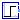
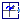

Library of signal source blocks generating Complex signals
Extends from Modelica.Icons.SourcesPackage (Icon for packages containing sources).
| Name | Description |
|---|---|
| Set output signal to a time varying Complex expression | |
| ComplexConstant | Generate constant signal of type Complex |
|  ComplexStep | Generate step signal of type Complex |
|  ComplexRotatingPhasor | Generate a phasor with constant magnitude and constant angular velocity of type Complex |
Set output signal to a time varying Complex expression
The (time varying) Complex output signal of this block can be defined in its parameter menu via variable y. The purpose is to support the easy definition of Complex expressions in a block diagram. Note, that "time" is a built-in variable that is always accessible and represents the "model time" and that Variable y is both a variable and a connector.
| Name | Description |
|---|---|
| Time varying output signal | |
| y | Value of Complex output |
| Name | Description |
|---|---|
| Time varying output signal | |
| y | Value of Complex output |
Generate constant signal of type Complex
The Complex output y is a constant signal:

Extends from Modelica.ComplexBlocks.Interfaces.ComplexSO (Single Output continuous control block).
| Name | Description |
|---|---|
| k | Constant output value |
| Name | Description |
|---|---|
| y | Connector of Complex output signal |
Generate step signal of type Complex
The Complex output y is a step signal (of real and imaginary part):

Extends from ComplexBlocks.Interfaces.ComplexSignalSource (Base class for continuous signal source).
| Name | Description |
|---|---|
| height | Height of step |
| offset | Offset of output signal y |
| startTime | Output y = offset for time < startTime [s] |
| Name | Description |
|---|---|
| y | Connector of Complex output signal |
Generate a phasor with constant magnitude and constant angular velocity of type Complex
The output y is a complex phasor with constant magnitude, spinning with constant angular velocity.
Extends from Modelica.ComplexBlocks.Interfaces.ComplexSO (Single Output continuous control block).
| Name | Description |
|---|---|
| magnitude | Magnitude of complex phasor |
| w | Constant angular velocity of complex phasor [rad/s] |
| phi0 | Initial angle of complex phasor at time = 0 [rad] |
| Name | Description |
|---|---|
| y | Connector of Complex output signal |